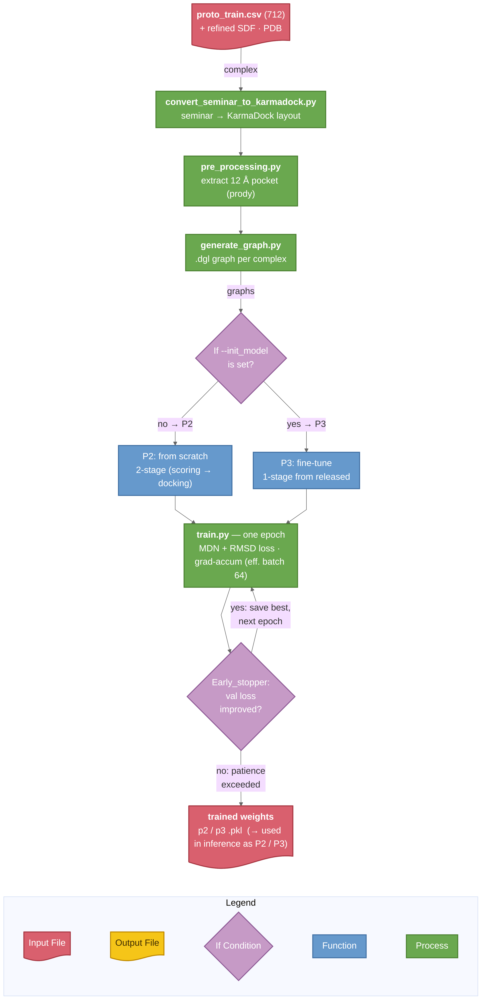
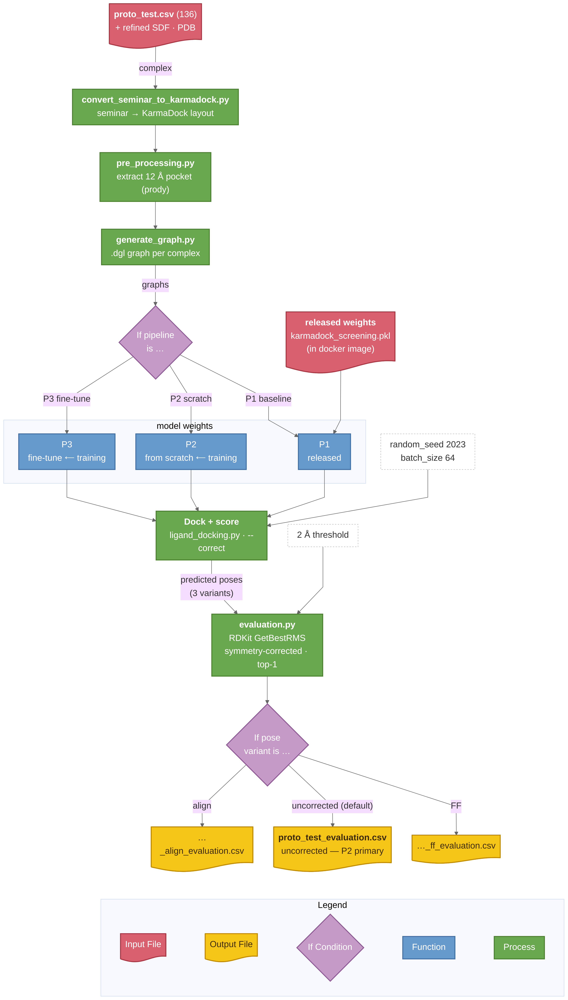

2. Training pipelines
Final full-data pipeline (the submission)
The submitted full_scratch model retrains KarmaDock from scratch on full_train (23,483) with validation on full_val (2,609), following the paper's two-stage protocol. Stage 1 (MDN scoring) ran on a single GPU. Stage 2 (docking) ran with DDP on 2× NVIDIA A100-40GB GPUs through scripts/train_ddp.py and condor/full_stage2_2gpu.sub; Condor job 169253 early-stopped at epoch 469 and exited 0.
The resulting model/full_scratch_karmadock_team002.pkl was benchmarked head-to-head against the authors' released weights on the same full_test (6,183) and posebusters_filtered (308), scored by the official evaluation.py.
Data-scale contrast: prototype training/testing 712/136 → final training/validation 23,483/2,609 → final testing 6,183 + 308.
Prototype pipelines (earlier phase, for context)
The P1/P2/P3 routes below belong to the earlier prototype phase: P2 and P3 trained on proto_train (712), and all three were scored on proto_test (136).
| pipeline | what it is | weights |
|---|---|---|
| P1 — baseline | released karmadock_screening.pkl, inference only |
upstream (in image) |
| P2 — from scratch | paper's 2-stage protocol, trained on proto_train (712) |
model/p2_scratch_karmadock_team002.pkl (available in the repository, not bundled into the website) |
| P3 — fine-tune (bonus) | released weights fine-tuned on proto_train (712) |
model/p3_finetune_karmadock_team002.pkl (available in the repository, not bundled into the website) |
Fine-tuning (P3) is a bonus, not a core requirement and still under development.
Prototype workflow
① Training — produces the P2 / P3 checkpoints:
{kind=link}

Preprocess proto_train (712) into graphs, then train: --init_model picks the route — P2 from scratch (Stage 1 MDN scoring → Stage 2 + docking RMSD) or P3 fine-tune from the released weights; Early_stopper keeps the best epoch as the checkpoint.
② Inference & evaluation:
{kind=link}

Run once per pipeline (P1 / P2 / P3): preprocess proto_test (136), dock + score with the chosen weights, export the 3 pose variants (uncorrected / FF / align), then score with the official evaluation.py (symmetry-corrected RMSD, top-1).
Check your understanding
-
How do P1, P2, and P3 differ in where their weights come from?
Show answer
P1 uses the released weights without training, P2 is trained from scratch with the two-stage protocol, and P3 fine-tunes the released weights.
-
What determines whether the training workflow produces P2 or P3?
Show answer
The initialization choice determines the path: P2 begins from scratch, while P3 supplies the released model through
--init_modeland fine-tunes it. -
Why does inference export three pose variants before evaluation?
Show answer
It enables separate comparison of the raw prediction, force-field relaxation, and reference-frame alignment under the same official evaluator.